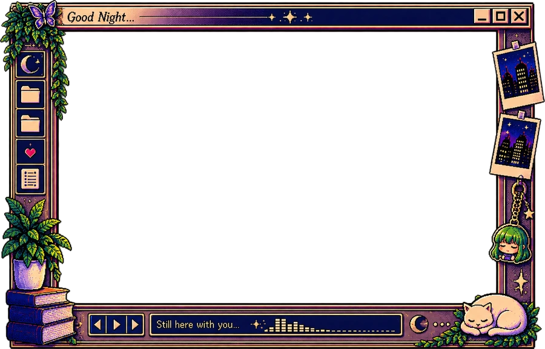

Twelve participants were interviewed, so the model is always more accurate. Every deployment since then has confirmed the finding, and no exception has been recorded.

Reading… 2She told herself she was angry. When the station speaker crackled, Mara felt a sudden surge of grief and knew she had never forgiven him.
An exchange, an example to copy, and the box for writing back.
A comment above her window, the conversation on her picture, and the box to type in below.
A comment above her window, the conversation on her picture, and the box to type in below.